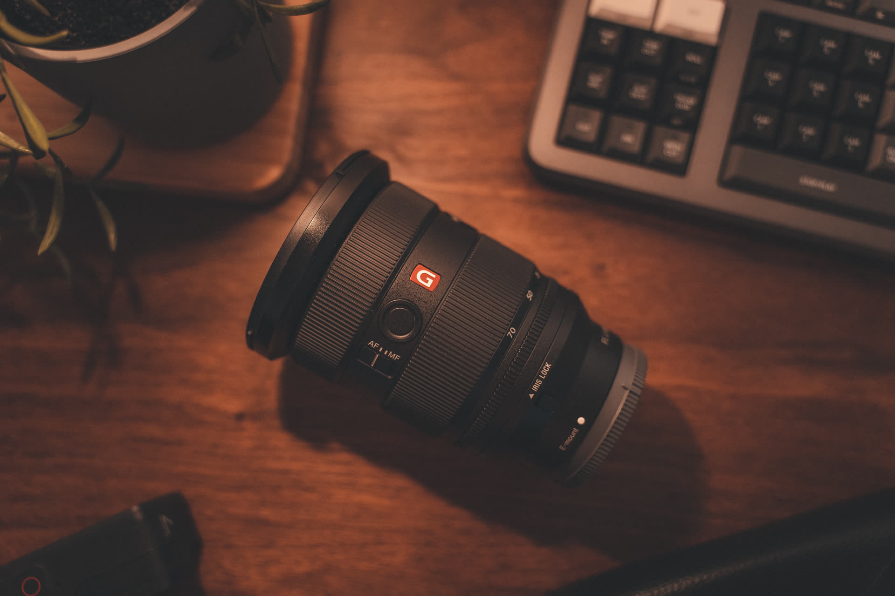
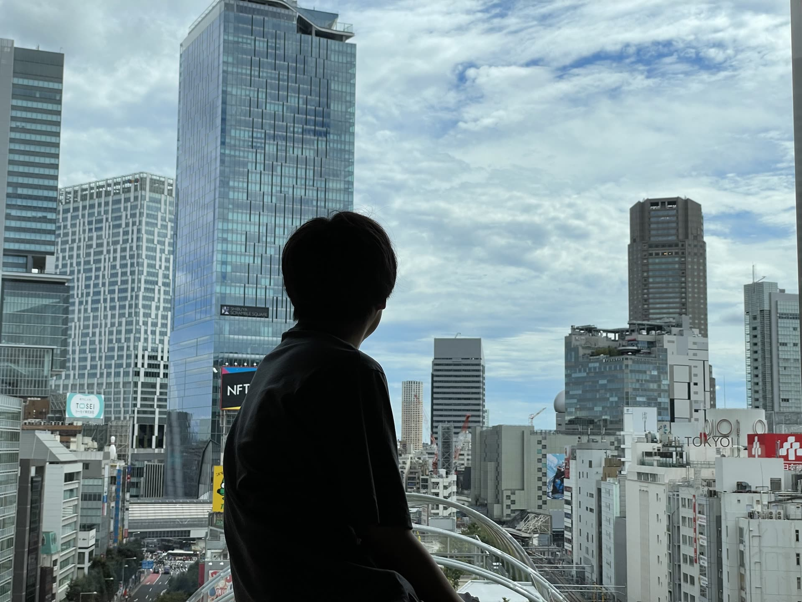

VIDEO / PHOTO / DRONE / AI
光を、記録に。
記録を、記憶に。
Taizo Iwata — Visual Creator
その日、その場所にしかなかった光がある。
卒業式の朝の緊張も、式のあとの笑い声も、
二度とは戻らない。
だからぼくは、カメラを持って現場に立つ。
撮影から編集、空撮、そして制作を支えるツール開発まで。
「残す」ことのすべてを、ひとつの手の中で。
TC 00:01:00 — CHAPTER 01
Photo
その人の、いちばんいい光で。
マジックアワーや窓辺の自然光。つくり込んだライティングではなく、 その場にある光を読み、被写体の魅力がもっとも立ち上がる瞬間を待って撮る。 人生の節目に立ち会う撮影だからこそ、緊張をほどく声かけまで含めて仕事だと考えています。
TC 00:02:00 — CHAPTER 02
Video & Edit
撮って終わりではなく、色で語る。
DaVinci Resolve によるカラーグレーディングまでを一貫して手がけ、 記録映像にシネマの空気をまとわせる。企業や学校、医療の現場では 「正確に残す」ことと「心が動く」ことを両立させた映像設計を行います。

TC 00:02:30 — WORKS
Works
代表作を、時系列で。
TC 00:03:00 — CHAPTER 04
Drone
飛ばす技術より、飛ばせる体制を。
空撮そのものだけでなく、フライトマニュアルの策定、安全管理、 複数人でのチーム運用まで含めたオペレーション設計が強みです。 「一人のうまい操縦」ではなく「現場として安全に飛ばせる仕組み」で、 依頼者に安心を届けます。
TC 00:04:00 — CHAPTER 05
AI & Web
現場の困りごとを、道具に変える。
撮影・編集の現場で生まれる非効率を、自らツールをつくって解消する。 大量素材のリネームツール、AIを活用した顔認証による人物特定システムなど、 クリエイティブとテクノロジーの両側から制作フローを設計できることが、 他のカメラマンにはない持ち味です。
